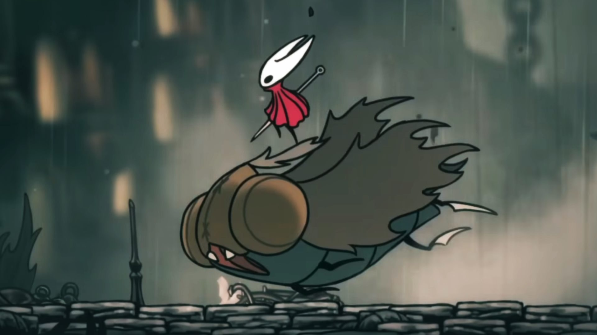

Hollow Knight: Silksong's First Patch Aims to Make the Early Game Easier
by William Hernandez
September 9, 2025

Hollow Knight: Silksong doesn't pull its punches. In terms of difficulty, it is a brutal experience — a noticeable jump from the baseline that its predecessor established. The comparisons to Dark Souls 2 are honestly very understandable. At its core, Silksong is a fun game, but it, undeniably, is way more punishing than fans could have ever expected.
It doesn't seem like Team Cherry has any plans to significantly overhaul Silksong's difficulty, but the game's first patch is addressing some early game balancing. Team Cherry is totally open to fan feedback, but, at this point, they appear to be a lot more concerned with fixing the game's most annoying bugs — the programming-related ones, to be exact.
The Full v1.0.28470 Patch Notes
The main changes of intrigue are related to the two bosses, Moorwing and Sister Splinter. Their difficulty has been slightly reduced, presumably to better ease players into the full offerings of Hollow Knight: Silksong. Two frustrating boss fights in close proximity within the first act of the game — not a great recipe for player retention.
There are more balance adjustments outside of the bosses, but Patch v1.0.28470 primarily focuses on bug fixes. Here are the full patch notes:
- Fixed situation where players could remain cloakless after Slab escape sequence.
- Fixed wish Infestation Operation often not being completable during the late game.
- Fixed wish Beast in the Bells not being completable when Bell Beast is summoned at the Bilewater Bellway during the late game.
- Fixed getting stuck floating after down-bouncing on certain projectiles.
- Fixed courier deliveries sometimes being inaccessible in the late game.
- Fixed craft bind behaving incorrectly when in memories.
- Fixed Lace tool deflect soft-lock at start of battle in Deep Docks.
- Fixed Silk Snippers in Chapel of the Reaper sometimes getting stuck out of bounds.
- Fixed Claw Mirrors leaving Hornet inverted if taking damage during a specific moment while binding.
- Fixed Snitch Pick not giving rosaries and shell shards as intended.
- Removed float override input (down + jump, after player has Faydown Cloak).
- Slight difficulty reduction in early game bosses Moorwing and Sister Splinter.
- Reduction in damage from Sandcarvers.
- Slight increase in pea pod collider scale.
- Slight reduction in mid-game Bellway and Bell Bench prices.
- Slight increase in rosary rewards from relics and psalm cylinders.
- Increase in rosary rewards for courier deliveries.
- Various additional fixes and tweaks.
PC players can already access v1.0.28470 via a public beta branch, but the patch is expected to officially release some time between September 16 and September 19, 2025.